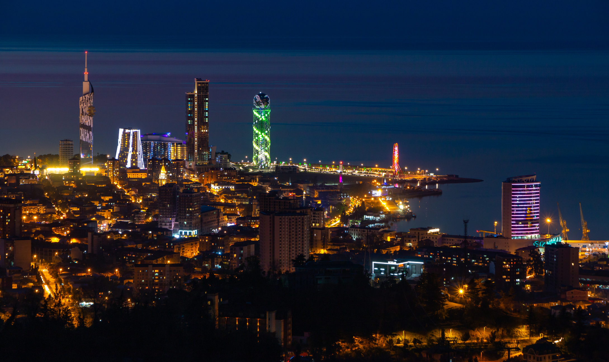
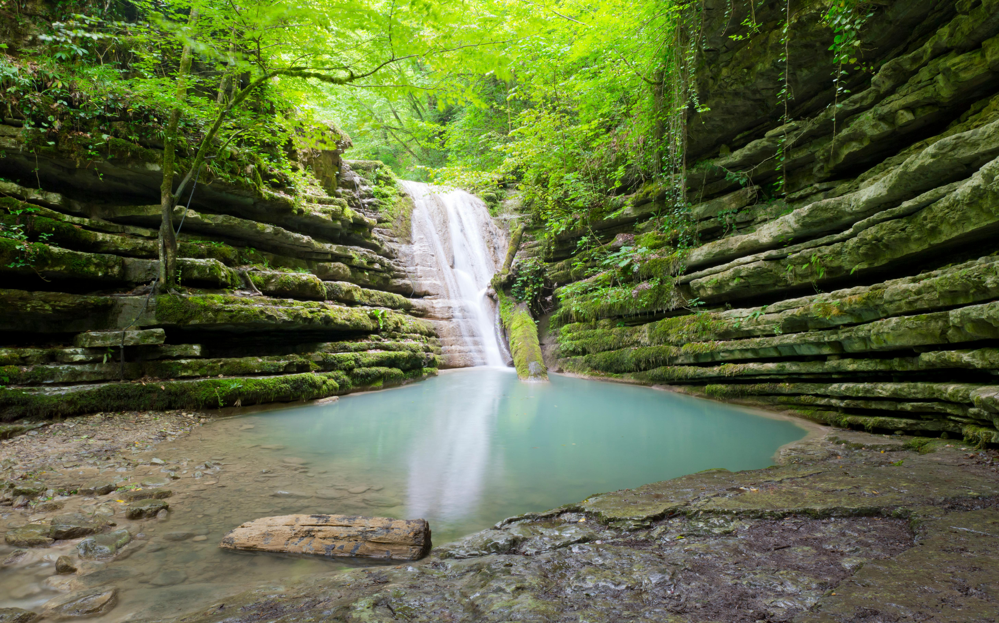
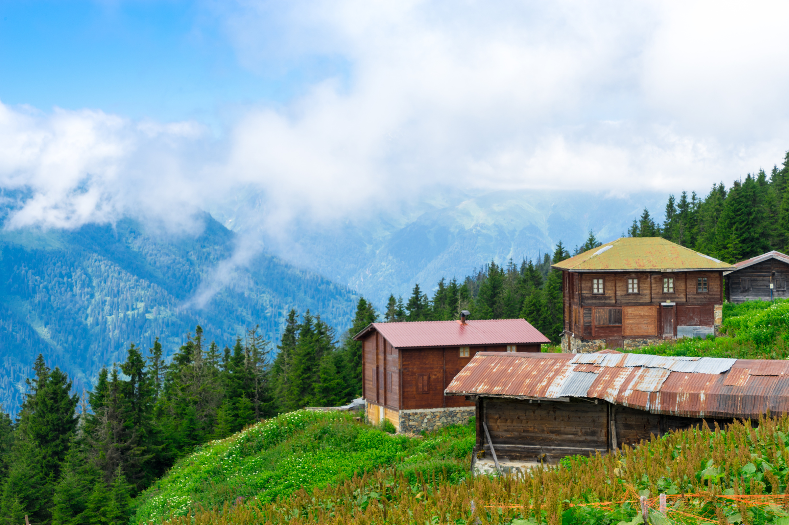
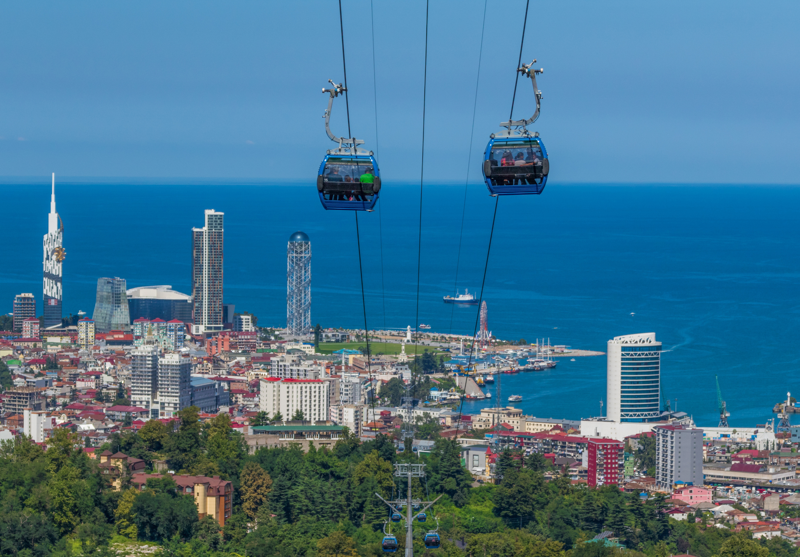
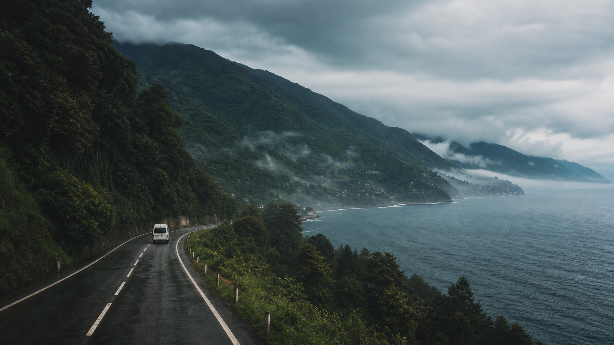
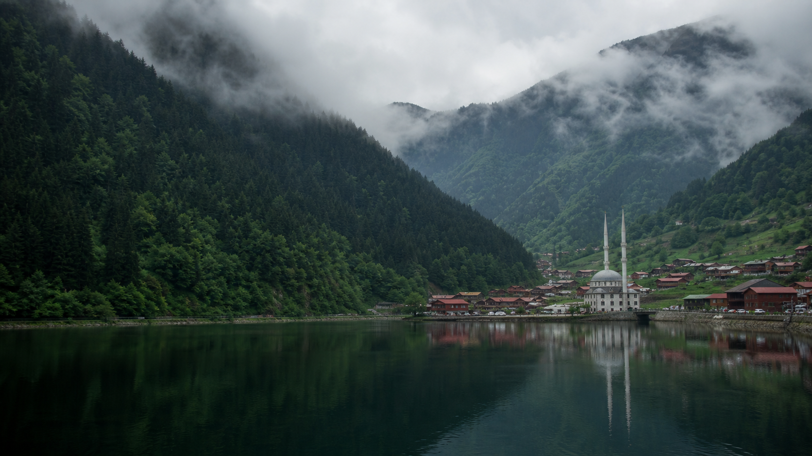
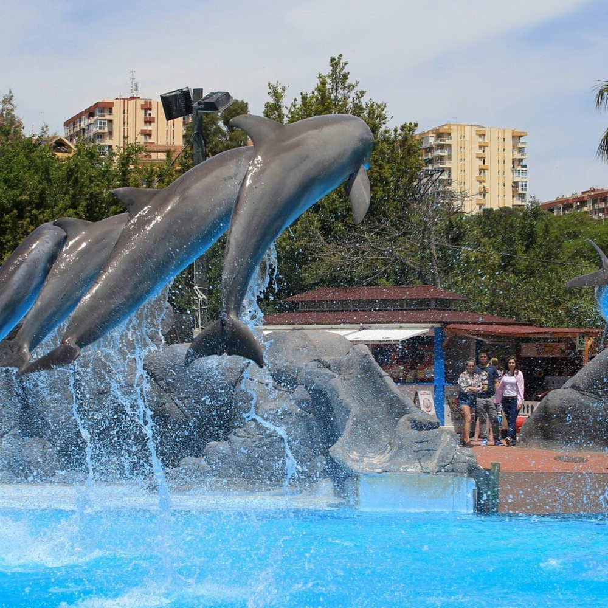
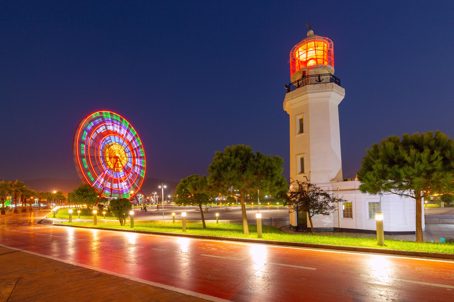

ДЕНЬ 01 01 / 08
Прилететь
к морю.
Ташкент → Батуми или Трабзон. Встреча в аэропорту, трансфер, заселение и первый спокойный вечер на черноморской набережной.
- Трансфер в отель
- Вечерняя прогулка
- Первый ужин у моря
RIZE + BATUMI / 08 DAYS
Забронировать ↗BLACK SEA ESCAPE / 2027
8 дней по маршруту Ризе, Узунгёль, Айдер и Батуми.
Листайте, чтобы начать ↓ТАМ, ГДЕ ГОРЫ ВСТРЕЧАЮТ МОРЕ
Мы собрали оба маршрута из вашей программы в одно выразительное путешествие: с мягким ритмом первых дней, природными открытиями, свободным временем и финальным возвращением домой.
08 DAYS / 07 NIGHTS
Каждая карточка — отдельная глава путешествия. Никакого списка «достопримечательностей ради галочки» — только места, где хочется задержаться.

ДЕНЬ 01 01 / 08
Ташкент → Батуми или Трабзон. Встреча в аэропорту, трансфер, заселение и первый спокойный вечер на черноморской набережной.

ДЕНЬ 02 02 / 08
Батуми раскрывается за пределами города: мост царицы Тамары, водопад Махунцети и древняя крепость Гонио-Апсарос.

ДЕНЬ 03 03 / 08
Дорога в Айдер Яйласы — через чайные плантации, густые леса и горные реки. По пути: Зилкале и мощный водопад Палови́т.

ДЕНЬ 04 04 / 08
Свободный день в Ризе или Батуми. Набережные, рынки, ботанический сад, чайные сады, маленькие кафе — без тайминга и спешки.

ДЕНЬ 05 05 / 08
Переезд вдоль Чёрного моря. Красивые перевалы, остановки для фото, паспортный контроль — и новая глава на другом берегу.

ДЕНЬ 06 06 / 08
Выезд в Узунгёль — живописное горное озеро Черноморского региона. Пещеры Карача, Torul Cam Teras и виды, которые не помещаются в кадр.

ДЕНЬ 07 07 / 08
Время Батуми: старый город, морская набережная, танцующие фонтаны, площади и вечер, который можно прожить по своему сценарию.

ДЕНЬ 08 08 / 08
Завтрак, последние прогулки и трансфер в аэропорт. Возвращение в Ташкент — с полным фотоальбомом, новыми вкусами и ощущением пройденного пути.